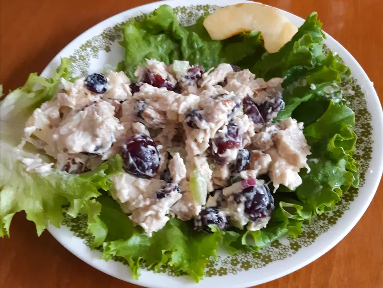

Description
A tasty starter for ant meal or a satisfying meal all on its own, this traditional salad is always a winner.
Ingredients
- ½ cup chopped walnuts
- 2 cooked rotisserie chicken breasts, cubed
- 1 cup seedless red grapes, halved
- ½ cup dried cranberries
- ½ Granny Smith apple, cored and cubed
- ¼ cup chopped red onion
- ½ cup mayonnaise
- ½ cup vanilla yogurt
- 2 teaspoons lemon juice
Directions
- Preheat oven to 325 degrees F (165 degrees C).
- Spread chopped walnuts onto a baking sheet.
- Roast walnuts in the preheated oven until they are fragrant and browned, 3 to 5 minutes. Remove and let cool.
- Lightly toss chicken with grape halves, cranberries, apple, walnuts, and onion in a salad bowl. Whisk mayonnaise, vanilla yogurt, and lemon juice in a separate bowl. Pour dressing over salad and toss again to coat.
- Enjoy!!!
Return to Home Page